Cliquez sur une question pour afficher la réponse.
Notre serveur est un projet communautaire roleplay sur le jeu SCP: Secret Laboratory. Notre objectif est de proposer une expérience fidèle à l'univers SCP tout en garantissant un environnement de jeu sérieux, équilibré et agréable pour tous les joueurs.
Ce serveur se distingue par son contenu unique et ses fonctionnalités personnalisées. L'équipe met l'accent sur l'équilibre du gameplay, la stabilité et la création d'une expérience immersive pour tous les joueurs.
L'accès au serveur est entièrement gratuit et ne nécessite aucune whitelist. Toutefois, vous avez la possibilité d'obtenir des avantages en jeu en soutenant le projet via notre Patreon : Cliquez Ici
Une fois dans le menu du jeu (SCP: Secret Laboratory (Steam)), allez dans la liste des serveurs puis recherchez "Site-Delta DarkRP" et rejoignez. Ou alors cliquez sur le bouton "Connexion Directe" et entrez l'IP présente sur la page d'accueil.
Tips : Mettez le serveur en favoris afin de ne pas à avoir à le rechercher à chaque fois.
Nous sommes toujours sur la dernière version présente du jeu. En revanche, vous ne nous verrez jamais sur les bêtas des mises à jours.
Le règlement complet est disponible dans le wiki, section “Règles”. Il est important de le lire attentivement avant de rejoindre le serveur.
Les contestations de bannissements/warn se font sur notre serveur Discord.
Vous pouvez contacter l'équipe via notre Discord officiel ou par email (voir Contact).